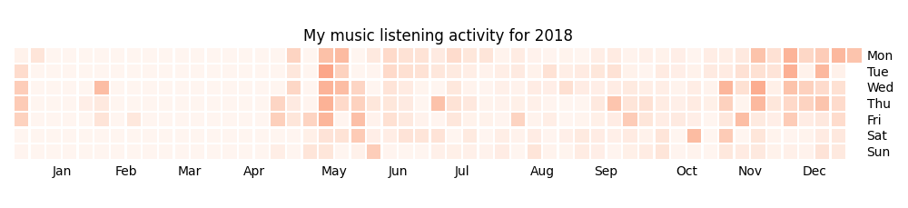

my. package
Draft stage: half-baked notes and not exactly sure about the post structure yet.
TLDR: I'm using my package (Python library) as a central interface to access and interact with my all my personal data.
I tried different things over the years and I think I'm getting to the point where it's manageable not only for me but can also be sahred with other people so they can 'just' plug in their data.
first part of the series where I am going into motivation and difficulties arising in implementation.
Table of Contents
¶1 TODO [A] Our data is trapped in different silos
I want to connect it.
¶TODO data needs to interact
- e.g. plotting sleep data vs exercise data
- weight data vs food consumption data
- sleep data vs rescuetime stats
- resting HR on whether or not you had a day off work
- merging e.g. jawbone, fitbit and emfit sleep data (which I used at different times)
¶2 Principles I used to keep it simple and manageable
¶TODO semi-defensive: mypy helps a lot
¶separate data retrieval and data access
¶3 Using the package
Mainly I use it to provider data for my automated scripts, tools and dashboards.
¶various #quantified-self dashboards
TODO link to plots
TODO I'm working on releasing rest of stuff
¶easy interactive querying (see example)
¶4 Other usecases
Also see readme for my. package.
¶What were my music listening stats for 2018?
Single import away from getting tracks you listened to:
from my.lastfm import get_scrobbles scrobbles = get_scrobbles() scrobbles[200: 205]
[Scrobble(raw={'album': 'Nevermind', 'artist': 'Nirvana', 'date': '1282488504', 'name': 'Drain You'}),
Scrobble(raw={'album': 'Dirt', 'artist': 'Alice in Chains', 'date': '1282489764', 'name': 'Would?'}),
Scrobble(raw={'album': 'Bob Dylan: The Collection', 'artist': 'Bob Dylan', 'date': '1282493517', 'name': 'Like a Rolling Stone'}),
Scrobble(raw={'album': 'Dark Passion Play', 'artist': 'Nightwish', 'date': '1282493819', 'name': 'Amaranth'}),
Scrobble(raw={'album': 'Rolled Gold +', 'artist': 'The Rolling Stones', 'date': '1282494161', 'name': "You Can't Always Get What You Want"})]
import pandas as pd df = pd.DataFrame([{ 'dt': s.dt, 'track': s.track, } for s in scrobbles]) cdf = df.set_index('dt') cdf = cdf.set_index(cdf.index.tz_localize(None)) cdf[200: 205]
track
dt
2010-08-22 14:48:24 Nirvana — Drain You
2010-08-22 15:09:24 Alice in Chains — Would?
2010-08-22 16:11:57 Bob Dylan — Like a Rolling Stone
2010-08-22 16:16:59 Nightwish — Amaranth
2010-08-22 16:22:41 The Rolling Stones — You Can't Always Get What...
We can use calmap library to plot a github-style music listening activity heatmap:
import calmap import matplotlib.pyplot as plt plt.figure(figsize=(10, 2.3)) calmap.yearplot(cdf['track'], how='count', year=2018) plt.tight_layout() plt.title('My music listening activity for 2018') plot_file = 'lastfm_2018.png' plt.savefig(plot_file) plot_file

This isn't necessarily very insightful data, but fun to look at now and then!
¶What are the most interesting Slate Star Codex posts I've read?
My friend asked me if I could recommend them posts I found interesting on Slate Star Codex. With few lines of Python I can quickly recommend them posts I engaged most with, the ones I annotated most on Hypothesis.
from my.hypothesis import get_pages from collections import Counter cc = Counter({p.link: len(p.highlights) for p in get_pages() if 'slatestarcodex' in p.link}) return cc.most_common(10)
¶Book reading progress
I publish my reading stats on Goodreads so other people can see what I'm reading/have read, but Kobo lacks integration with Goodreads. I'm using kobuddy to access my my Kobo data, and I've got a regular task that reminds me to sync my progress once a month.
The task looks like this:
* TODO [#C] sync reading progress with kobo DEADLINE: <2019-11-24 Sun .+4w -0d> eshell: with_my python3 -c 'import my.books.kobo as kobo; kobo.print_progress()'
With a single enter press on the embedded eshell command I can print the progress and fill in the completed books on Goodreads, e.g.:
A_Mathematician's_Apology by G. H. Hardy Started : 21 Aug 2018 11:44 Finished: 22 Aug 2018 12:32 Fear and Loathing in Las Vegas: A Savage Journey to the Heart of the American Dream (Vintage) by Thompson, Hunter S. Started : 06 Sep 2018 05:54 Finished: 09 Sep 2018 12:21 Sapiens: A Brief History of Humankind by Yuval Noah Harari Started : 09 Sep 2018 12:22 Finished: 16 Sep 2018 07:25 Inadequate Equilibria: Where and How Civilizations Get Stuck by Eliezer Yudkowsky Started : 31 Jul 2018 22:54 Finished: 16 Sep 2018 07:25 Albion Dreaming by Andy Roberts Started : 20 Aug 2018 21:16 Finished: 16 Sep 2018 07:26
¶5 Similar projects/setups/concepts
- QS ledger from Mark Koester
- Solid project: personal data pod, which websites pull data from